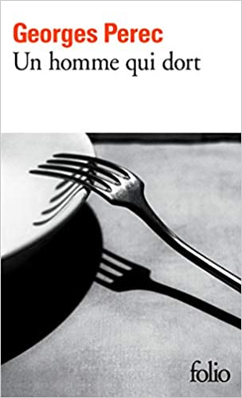
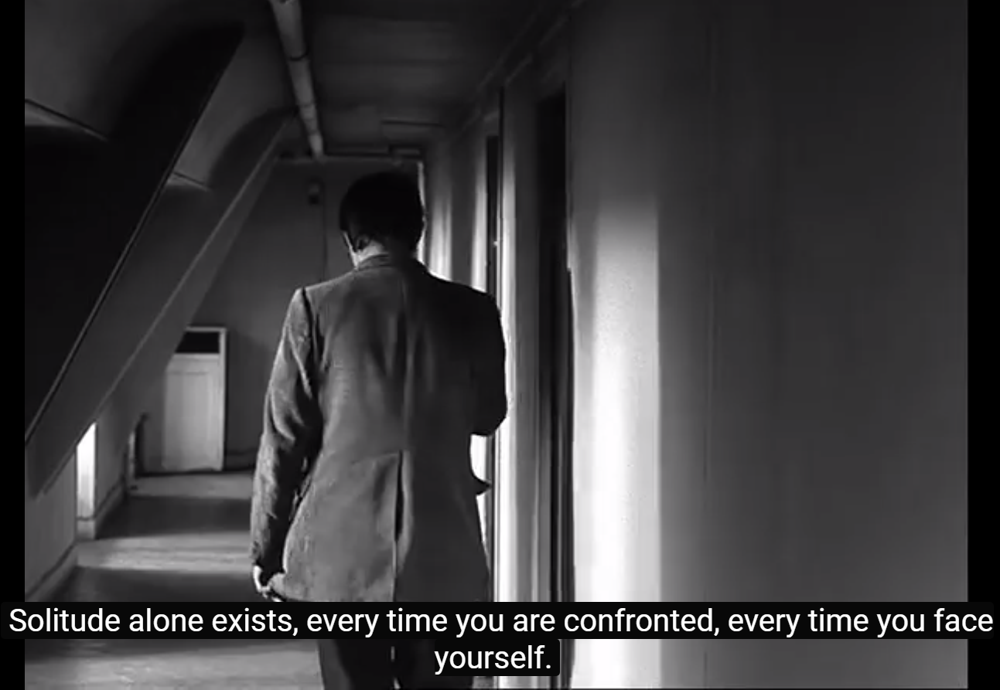

Un homme qui dort


Inspiradora do filme que leva o mesmo nome, Un homme qui dort é uma obra de romance escrita por
George Perec em 1967 sobre um homem que decide largar os estudos e o trabalho e viver de maneira
totalmente apática em relação às pessoas e o cotidiano, não fazendo nada além de contemplar o vazio em si mesmo.
Se você é um apreciador da literatura existencialista, este livro é um prato cheio.
Índice
- O desatinar
- O vazio
- O ser e o objeto
- O espectro
- O fim
Valor: R$107,11
Compre aqui

E-mail de contato: Nicolasastaroth@gmail.com
Me siga no YouTube
Me siga no instagram